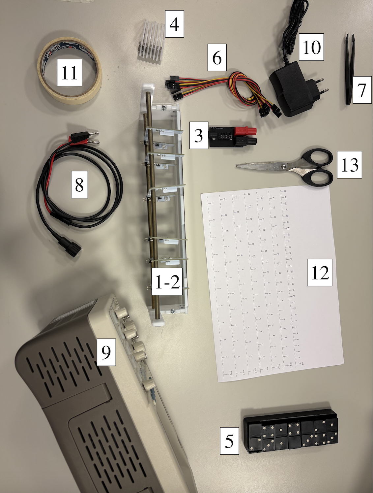
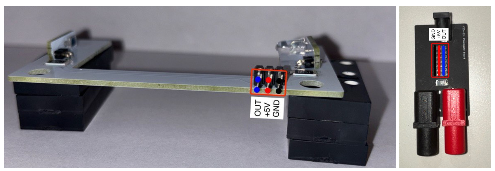
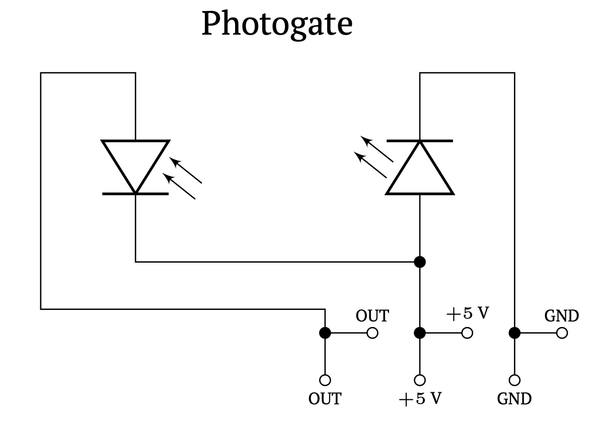
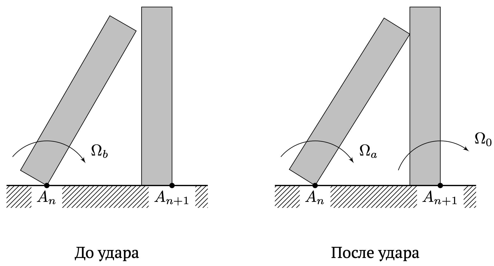
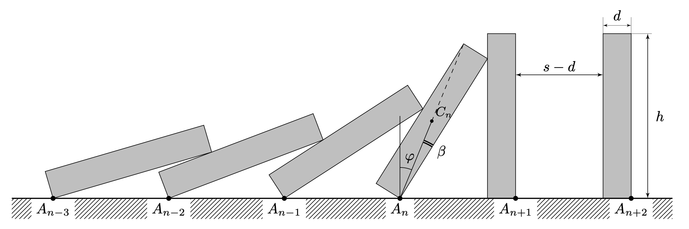

Y25 (2025) — English translation
Equipment: Measuring bench Photogates 6 pcs. Photogate board Magnetic stopper 7 pcs. Dominoes 21 pcs. Female-female wires 6 pcs. Tweezers BNC banana wire Oscilloscope Power supply Masking tape Two sheets of paper rulers with different pitches Scissors Attention! Items 1-4 are quite fragile. Be careful when handling them! In case of equipment failure, points for the task may be canceled! Attention! To avoid damage, move the photogates along the guides very carefully, DO NOT APPLY excessive force. Note. The magnets from the stopper sometimes come off; contact the person on duty if you need to attach a magnet to the stopper.
Attention! Items 1-4 are quite fragile. Be careful when handling them! In case of equipment failure, points for the task may be canceled!
Attention! To avoid damage, move the photogates along the guides very carefully, DO NOT APPLY excessive force.
Note. The magnets from the stopper sometimes come off; contact the person on duty if you need to attach a magnet to the stopper.


The photogate consists of an LED and a photodiode and has three pairs of output pins (see Figures 1 and 2). The photogate pins are connected by female-female wires to the corresponding photogate board pins. An oscilloscope is connected to the banana outputs of the photogate board, and a power supply is connected to the remaining output. With this connection, the photogate LED lights up, and the oscilloscope records a signal proportional to the intensity of radiation incident on the photogate photodiode. To carry out the experiment, connect the outputs of all photogates in parallel and connect one of them to the photogate board as described above. In this configuration, the oscilloscope signal is proportional to the total light intensity on all photodiodes. Attention! Check that the oscilloscope signal changes when the light from each LED is blocked individually. If the change is less than 15 mV, contact the duty officer and clearly show it. Rice. 2
The photogate consists of an LED and a photodiode and has three pairs of output pins (see Figures 1 and 2). The photogate pins are connected by female-female wires to the corresponding photogate board pins. An oscilloscope is connected to the banana outputs of the photogate board, and a power supply is connected to the remaining output. With this connection, the photogate LED lights up, and the oscilloscope records a signal proportional to the intensity of radiation incident on the photogate photodiode. To carry out the experiment, connect the outputs of all photogates in parallel and connect one of them to the photogate board as described above. In this configuration, the oscilloscope signal is proportional to the total light intensity on all photodiodes. Attention! Check that the oscilloscope signal changes when the light from each LED is blocked individually. If the change is less than 15 mV, contact the duty officer and clearly show it.
The photogate consists of an LED and a photodiode and has three pairs of output pins (see Figures 1 and 2). The photogate pins are connected by female-female wires to the corresponding photogate board pins. An oscilloscope is connected to the banana outputs of the photogate board, and a power supply is connected to the remaining output. With this connection, the photogate LED lights up, and the oscilloscope records a signal proportional to the intensity of radiation incident on the photogate photodiode.
To carry out the experiment, connect the outputs of all photogates in parallel and connect one of them to the photogate board as described above. In this configuration, the oscilloscope signal is proportional to the total light intensity on all photodiodes.
Attention! Check that the oscilloscope signal changes when the light from each LED is blocked individually. If the change is less than 15 mV, contact the duty officer and clearly show it.

In the experimental points of the problem, it will be necessary to remove the sequence of times $t_n$, where $t_n$ is the moment of impact of the domino with the number $n-1$ on the domino with the number $n$, $t_1 = 0$. To measure this sequence, line up a row of dominoes on the measuring bench at equal distances $s$ from each other, then push the first domino to start the wave. Falling dominoes will block the light from the LEDs, and the signal on the oscilloscope will change. By examining it, we can obtain the required sequence $t_n$.
Let's consider the theory that describes the fall of dominoes. Let us introduce the following notation: $\Omega_{b}$ – angular velocity of the domino immediately before hitting the next one, which is at rest (before); $\Omega_0$ – angular velocity of the domino immediately after impact with the previous one; $\Omega_{a}$ – angular velocity immediately after the impact with the next one (after); $m$ – mass of one domino; $\alpha = d/h = 0.135\pm0.005$; $\beta$ is the deviation of line $A_nC_n$ from the vertical when the domino is at rest, and $C_n$ is its center of mass; $\varphi$ – deviation of the line $A_nC_n$ from the vertical when the domino hits the next one.
Let's consider the theory that describes the fall of dominoes.
Let us introduce the following notation:


Let us note that the propagation speed of the wave of falling dominoes is established quite quickly, that is, the dependence of $t_n$ on $n$ becomes linear. The process of propagation of an excitation wave in a series of dominoes is influenced by a large number of factors that are difficult to take into account together. These include, for example, slipping on the surface and friction between knuckles. In this problem we will consider the simplest model of domino wave propagation, which includes the following assumptions: there is no slipping along the surface; there is no friction between the knuckles; dominoes are uniform; the impact of the knuckles is absolutely inelastic, which means that the knuckles do not come off after the impact, but only slide over each other; at the moment of impact, the change in the kinetic energy of the dominoes not participating in the impact (in the figure above this is all except $n$ and $n+1$) is negligible. That is, the kinetic energy of the entire domino system immediately before the impact: $K_{до} = \frac{I\Omega_b^2}{2}$, the kinetic energy of the entire domino system immediately after the impact: $K_{после}=\frac{I(\Omega_a^2+\Omega_0^2)}{2}$, where $I$ is the moment of inertia of the domino relative to the axis of rotation; During the impact, the angular velocity of the falling domino drops $k$ times: $\Omega_a =\Omega_b/k$.
Let us note that the speed of propagation of the wave of falling dominoes is established quite quickly, that is, the dependence of $t_n$ on $n$ becomes linear.
The process of propagation of an excitation wave in a series of dominoes is influenced by a large number of factors that are difficult to take into account together. These include, for example, slipping on the surface and friction between knuckles.
In this problem we will consider the simplest model of domino wave propagation, which includes the following assumptions:
We will assume that the propagation speed of the wave $c$ is equal to \[c = \dfrac{s\Omega_0}{2(\beta+\varphi)} \left( 1 + \dfrac{1}{k} \right).\]
The quantity $k$ is a kinematic parameter, which actually contains all the non-trivial dynamics, for example, the emerging impact forces. Let us study the dependence of $k$ on $s/h$.
Source: https://pho.rs/p/4546